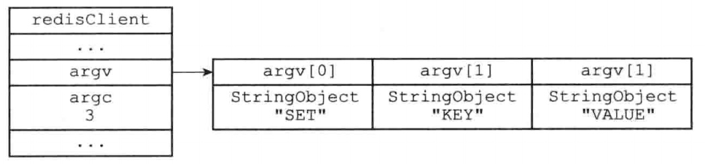
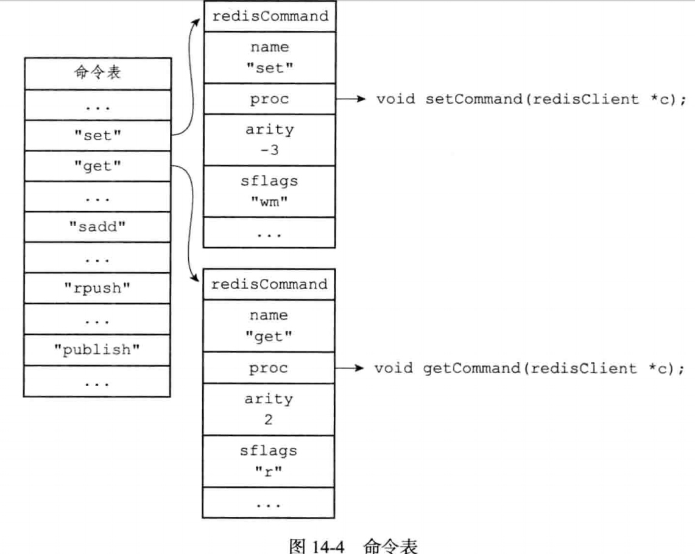

服务器
一、命令请求的执行过程
redis> SET KEY VALUE
OK
- 客户端向服务器发送命令SET KEY VALUE
- 服务器接收并处理命令，在数据库中进行操作，并产生命令回复OK
- 服务器将命令回复OK发送给客户端
- 客户单接收服务器返回的回复OK，并将这个回复打印给用户
发送命令请求
通过连接的套接字，按协议格式发送给服务器
读取命令请求
- 按协议格式读取命令请求，并将其保存到客户端状态的输入缓存区里。
- 对输入缓冲区的命令进行分析，提取命令中包含的命令参数、个数，分别保存在argv和argc里
- 调用命令执行器，执行客户端指定的命令。

命令执行器（1）：查找命令
根据客户端状态的argv[0]参数，在命令表中查找参数所指定的命令，并将命令保存在客户端状态的cmd属性里面。 大小写无关（SET、set、Set 都有效）

命令执行器（2）：执行预备操作
到目前为止，已将需要执行的命令实现函数(cmd)、参数(argv)、参数个数(argc)都收集齐了，但在执行命令前，需要进行一些预备操作：
- 检查客户端状态的cmd指针是否指向NULL，是的话不在执行后续步骤，向客户端返回一个错误
- 检查客户端cmd属性指向的redisCommand结构的arity属性，检查参数个数是否正确。
- 检查客户端是否已通过身份验证
- 如果服务器打开了maxmemory功能，先检查服务器的内存占用情况，并在有需要时进行内存回收
- 如果服务器上一次执行BGSAVE命令出错，并且服务器打开了stop-writes-on-bjsave-error功能，命令是写命令的话会拒绝执行
- 等等其他
命令执行器（3）：调用命令实现函数
// client 是指向客户端状态的指针
client->cmd->proc(client)
被调用的命令实现函数会执行指定的操作，并产生相应的命令恢复，这些回复会被保存在客户端状态的输出缓冲区里（buf属性和reply属性）
命令执行器（4）：执行后续工作
- 如果开启了慢查询日志，检查是否需要为刚刚执行完的命令添加一条新的慢查询日志
- 如果开启了AOF，将刚执行的命令写到AOF缓冲区里
- 如果有从服务器，会将改命令写给从服务器
将命令回复发送给客户端
命令实现函数会将回复保存在客户端的输出缓冲区里，并为客户端的套接字关联命令回复处理器，将输出缓冲区的命令发送给客户端，并清空客户端状态的输出缓冲区
客户端接收并打印命令回复
redis> SET KEY VALUE
OK
客户端接收到"+OK\r\n" 转换为 "OK\n"
二、serverCron函数
serverCron默认每隔100毫秒执行一次，负责管理服务器的资源
更新服务器时间缓存
struct redisServer {
// 保存了秒级精度的系统当前unix时间
time_t unixtime;
// 毫秒级
time_t long mstime;
}
更新LRU时钟
每个Redis对象都有一个LRU属性，保存了对象最后一次访问的时间。
serverCron默认每10秒一次的频率更新lruclock属性
更新服务器每秒执行的命令次数
服务器状态中的stat_peak_memory记录服务器的内存峰值大小，如果检测到比记录值大则更新
struct redisServer{
// 已使用内存峰值
size_t stat_peak_memory;
}
管理客户端资源
serverCron函数每次执行都会调用clientsCron函数，进而检查：
- 如果客户端与服务器的链接已超时（长时间没有交互），释放这个客户端
管理数据库资源
serverCron函数每次执行都会调用databasesCron函数，检查数据库过期键，有需要时，对字典进行收缩操作
执行持久化操作
初始化服务器
初始化服务器状态结构
创建一个struct redisServer类型的实例变量server作为服务器的状态，并为结构中的各个属性设置默认值